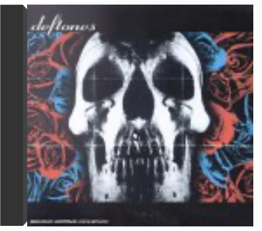

around the furdeftones around the furdeftones  Refusant de se laisser enfermer dans le carcan du neometal, les Deftones invoquent leur multiethnicité (deux Mexicains, un Chinois et un Blanc) pour revendiquer une diversité d'influences permettant de toucher un public très vaste. Ça, c'est la théorie. En pratique, il faut cependant appeler les choses par leur nom. Les Deftones ne jouent ni du grunge, ni du punk-rock (et encore moins du hardcore, contrairement à ce que l'on a pu lire parfois), ni du hard rock, ni même du metal "normal" (quoique l'énergie qu'ils dégagent s'y prête volontiers), mais bel et bien du neometal. Et tant pis si l'on range souvent un peu tout et n'importe quoi dans cette catégorie. Car, même si les Deftones savent se montrer cajoleurs à l'occasion, lorsque le tempo se fait plus lent et la voix de Chico Moreno plus langoureuse, ils ont plutôt tendance à appuyer singulièrement leurs accords... peut-être aussi pour se débarrasser des ressemblances trop flagrantes avec Korn qui leur furent reprochées à l'époque d'Adrenaline, leur premier album. On notera par ailleurs la présence, en invité d'honneur, de Max Cavalera, l'ex-leader de Sepultura parti fonder Soulfly, sur le titre "Head Up" (dédié à la mémoire de Dana, le beau-fils de Max, décédé dans un accident de la route en août 1996). —Hervé SK Guégano deftonesdeftones Après le succès interplanétaire de White Pony, le pinacle de la carrière des Deftones, quatuor formé à Sacramento (Californie) en 1988, la bande à Moreno désormais renforcé du Dj Franck Delgado déboule avec un 4ème album. Fidèles au règlement de la confrérie métallurgiste des Korn, Limp Bizkit et Cie, les Deftones offrent aux headbangers leur dose d’éructations rageuses et de rythmiques implacables comme cette introduction inhospitalière "Hexagram". Mais les fans hardcore devront s’écarter de ce pré-carré pour apprécier les spirales électroniques de "Lucky You", le piano funèbre de "Anniversary of an Uninteresting Event" ou les riffs western spaghetti de "Deathblow", titres où les Deftones sacrifient leurs racines metal par amour du rock, de Radiohead à Cure, d’Ornette Coleman à My Bloody Valentine. “Minerva”, single offensif et mélancolique au refrain implacable, reflète le périple aventureux des Deftones, désormais plus proche de la veine de feu Smashing P! umpkins et des expérimentations de Radiohead que de Slayer. —Sabrina Silamo  koi no yokandeftones koi no yokandeftones 1 - swerve city  l.a. womanthe doors l.a. womanthe doors C'est peu après la sortie de cet album que Jim Morrison s'établissait à Paris avec Pamela, espérant oublier son statut de rock-star et de sex-symbol pour mieux repartir à zéro. On connaît la suite... Dernier disque de Morrison, L.A. Woman sonne symboliquement comme une apothéose. Mais, au-delà, c'est bien d'un disque essentiel du groupe californien et du rock qu'il s'agit. Si l'intro de "Riders On The Storm" justifie à elle seule le qualificatif de chef-d'oeuvre, que dire de "The Changeling", de "Love Her Madly", de "L'America" et, bien sûr, du morceau titre ? Morrison n'a peut-être jamais aussi bien chanté et Krieger, Manzarek et Densmore (accompagnés ici par le bassiste Jerry Scheff et le guitariste Marc Benno) n'ont peut-être jamais aussi bien joué, jamais aussi finement ciselé l'esthétique Doors. Paru en 1971, L.A. Woman a reçu en France le grand prix de l'académie Charles-Cros. —Philippe Margotin |


 Made with Delicious Library
Made with Delicious LibraryNancy, State zipflap congrotus delicious library Thomas, Julien